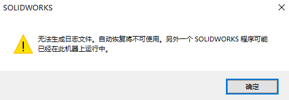

无法生成日志文件
方法1
“无法生成日志文件”这是在多开SW应用进程时，会出现的正常提示。可以忽略即可。
方法2
退出SW软件多开的进程，退出SldWorks_fs程序（Solidworks Fast Start）。

来自 Solidworks 帮助：
为了更快地启动，SolidWorks 会在您启动计算机时开始在后台加载零部件。Solidworks 快速启动可能会稍微减慢您的 Windows 登录时间。
要关闭 SolidWorks 快速启动：
在 Windows 中，单击“开始”>“所有程序”>“启动”。
右键单击 SolidWorks 快速启动，然后单击删除。
出现对话框时，单击“是”。
您可以通过修复 SolidWorks 安装来恢复 SolidWorks 快速启动。